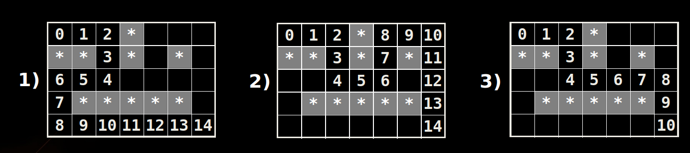

We are given a labyrinth
- Represented as matrix of cells of size M x N
- Empty cells are passable, the others (*) are not
We start from the top left corner and can move in all 4 directions: left, right, up, down
- We want to find all paths to the bottom right corner

Suppose we have an algorithm FindExit(x,y) that finds and prints all paths to the exit (bottom right corner) starting from position (x,y)
- If (x,y) is not passable, no paths are found
- If (x,y) is already visited, no paths are found
- Otherwise:
- Mark position (x,y) as visited (to avoid cycles)
- Find recursively all paths to the exit from all neighbor cells: (x-1,y) , (x+1,y) , (x,y+1) , (x,y-1)
- Mark position (x,y) as free (can be visited again)
在做标记的时候，直接在迷宫上标记了
package recursion;
import java.util.List;
import java.util.LinkedList;
public class Labyrinth {
//use to store (row,col) pairs
static class Tuple{
int row;
int col;
Tuple(int row,int col){
this.row = row;
this.col = col;
}
@Override
public String toString() {
return "( "+this.row+" , "+this.col+" )";
}
}
// * are not passable,' ' are passable, 'e' is the exit
static char[][] lab =
{
{' ', ' ', ' ', '*', ' ', ' ', ' '},
{'*', '*', ' ', '*', ' ', '*', ' '},
{' ', ' ', ' ', ' ', ' ', ' ', ' '},
{' ', '*', '*', '*', '*', '*', ' '},
{' ', ' ', ' ', ' ', ' ', ' ', 'e'},
};
static final int row_len = lab.length;
static final int col_len = lab[0].length;
static List<Tuple> path = new LinkedList<>();
public static void main(String[] args) {
FindExit(0,0);
}
private static void FindExit(int row,int col){
if( (row<0) || (col<0) || (row>=row_len) || (col>=col_len) ){
//we are out of the boundary
return;
}
//check if we found the exit
if( lab[row][col] == 'e'){
//System.out.println("Found Exit!");
printPath(row,col);
return;
}
//check if passable
if(lab[row][col] != ' '){
return;
}
//Temporarly mark the current cell as visited
lab[row][col] = 'v';
//Append the current direction to the path
path.add(new Tuple(row,col));
//Invoke recursion to explore all possiable directions
FindExit(row,col-1); //left
FindExit(row-1,col); //up
FindExit(row,col+1); //right
FindExit(row+1,col); //down
//mark back the current
lab[row][col] = ' ';
//Remove the last direction from the path
path.remove(path.size()-1);
}
private static void printPath(int finalRow,int finalCol){
System.out.println("Found the exit.");
for(Tuple t: path){
System.out.print(t+"->");
}
System.out.printf("( %d , %d )\n",finalRow,finalCol);
}
}
/**
Found the exit.
( 0 , 0 )->( 0 , 1 )->( 0 , 2 )->( 1 , 2 )->( 2 , 2 )->( 2 , 1 )->( 2 , 0 )->( 3 , 0 )->( 4 , 0 )->( 4 , 1 )->( 4 , 2 )->( 4 , 3 )->( 4 , 4 )->( 4 , 5 )->( 4 , 6 )
Found the exit.
( 0 , 0 )->( 0 , 1 )->( 0 , 2 )->( 1 , 2 )->( 2 , 2 )->( 2 , 3 )->( 2 , 4 )->( 1 , 4 )->( 0 , 4 )->( 0 , 5 )->( 0 , 6 )->( 1 , 6 )->( 2 , 6 )->( 3 , 6 )->( 4 , 6 )
Found the exit.
( 0 , 0 )->( 0 , 1 )->( 0 , 2 )->( 1 , 2 )->( 2 , 2 )->( 2 , 3 )->( 2 , 4 )->( 2 , 5 )->( 2 , 6 )->( 3 , 6 )->( 4 , 6 )
*/